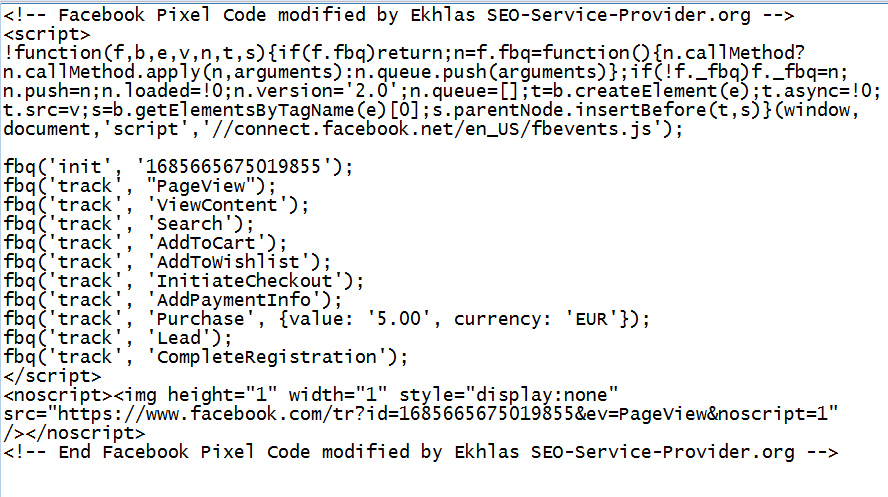
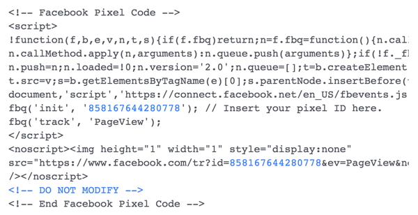

The Web
Categorie
CMS & Website Builder
Profiel Web Manager
Content Management Systeem
Een web content management systeem (CMS) is een software specifiek voor publicatie van webinhoud. Het biedt hulpprogramma's voor het ontwerpen, bouwen en beheren van websites waarmee gebruikers met weinig kennis van webprogrammeertalen of opmaaktalen website inhoud kunnen maken en beheren.
Een CMS vormt de basis voor samenwerking en biedt gebruikers de mogelijkheid om documenten en uitvoer te beheren voor bewerking en deelname van meerdere auteurs. De meeste systemen gebruiken een inhoudsrepository of een database om pagina inhoud, metagegevens en andere informatie assets op te slaan die het systeem nodig heeft. Een presentatielaag, sjabloon engine, toont de inhoud aan websitebezoekers op basis van een set sjablonen, soms XSLT-bestanden.
De meeste systemen gebruiken server side caching om de prestaties te verbeteren. Dit werkt het beste wanneer het CMS niet vaak wordt gewijzigd maar bezoeken regelmatig plaatsvinden. Beheer wordt meestal ook gedaan via browser gebaseerde interfaces, maar sommige systemen vereisen het gebruik van een fat client.
Website Builder
Website builders zijn hulpmiddelen waarmee websites doorgaans kunnen worden gebouwd zonder handmatige codebewerking. Ze vallen in twee categorieën:
Online tools aangeboden door webhosting bedrijven. Deze zijn meestal bedoeld voor MKB bedrijven, ZZP'ers en freelancers of gebruikers om hun privésite te bouwen. Sommige bedrijven staan de site eigenaar toe om alternatieve tools (commercieel of open source) te installeren. De meer complexe hiervan kan ook worden beschreven als Content Management Systemen.
Offline software die op een computer draait, pagina's maakt en die deze pagina's vervolgens op elke host kan publiceren. Deze worden vaak beschouwd als "website ontwerpsoftware" in plaats van "website bouwers". Deze offline software komt verder niet aan de orde bij profiel Web Manager, maar vanwege de complexiteit wel bij profiel Full Stack Web Developer.
Hosting CMS vs Website Builder
 Een website builder is bijna altijd gekoppeld aan één leverancier die de applicatie levert in combinatie met hosting. Oftewel, gebruiker maakt op de website van aanbieder een account aan, gaat een overeenkomst aan, betaald en kan gelijk aan het werk waarbij de leverancier de hele technische voorziening verzorgt.
Een website builder is bijna altijd gekoppeld aan één leverancier die de applicatie levert in combinatie met hosting. Oftewel, gebruiker maakt op de website van aanbieder een account aan, gaat een overeenkomst aan, betaald en kan gelijk aan het werk waarbij de leverancier de hele technische voorziening verzorgt.
Omdat alles online en verzorgt is, geeft dat een groot gebruiksgemak. Wel is aandachtig geboden voor wat betreft eventuele toekomstige plannen! Want bijna nooit kan de opgebouwde website eventueel later verhuizen (technische term is migratie) naar een andere hosting partij. Deze lock down ervaren veel organisaties als minder interessant.
Een CMS tool kan door gebruiker initieel gedownload worden op eigen computer. Vervolgens kan gebruiker offline op computer de website met content inrichten. En als gereed voor productie kan het geheel worden geupload naar een webserver naar keuze! Bijvoorbeeld door bij een hosting bedrijf huren van een virtual private server (VPS). Dagelijks beheer gebeurt dan op die VPS online. Deze technische opzet van "eigen beheer" geeft dat organisatie ten alle tijden van hosting bedrijf cq webserver kan wisselen.
Veel hosting bedrijven bieden bij huur van een VPS aan om deze dan gelijk met CMS tool naar keuze, zonder lock down, in te richten. In feite heeft gebruiker dan dezelfde ervaring als bij een website builder maar dan met de optie om zelf de hele website (dat is de CMS tool en daarin geplaatste content) later te migreren naar andere webserver cq provider.
Tooling keuze
Er is een keuze gemaakt op basis van meest populaire tools, degene die het meeste gebruikt worden. Naast "per soort" vermelde tools zijn er meestal van die soort een reeks andere mogelijkheden en gebruiker zou eigenlijk zelf een verkenning moeten doen en programma's uitproberen.
Privacy
Zoals op deze website bij cookies track en trace is uitgelegd bouwen website ontwikkelaars meestal op wens cq eis van opdrachtgever allerlei scripts in die website om bezoekers van website te monitoren. Dus de "eigenaar" van website, gemaakt met CMS of website builder, komt voor de keuze te staan wat te doen?
→ zie: Wikipedia Google Analytics
 En bijna niemand kan de verleiding weerstaan en bouwt de scripts in; en dat is zeer jammer want het is een vorm van legale spyware want niet alleen ziet eigenaar zijn bezoekers, de hele infrastructuur erachter is zo ingricht dat datasharks met die gegevens persoonlijke profielen maken door data van uw website scripts te koppelen aan Google Search, Facebook (bij geen account dan toch schaduwprofiel), LinkedIn, Instagram enzovoorts.
Dus website eigenaar wil slechts bezoekers monitoren maar stelt door inbouw van die faciliteit al-dan-niet bewust alle bezoekers bloot aan digitale achtervolging.
 Het is hierom dat de hoofdpagina van deze website begint met optimale enduser computer om die track en trace scripts te neutraliseren. Vraag anders aan uw website ontwikkelaar om een alternatieve (bijv in PHP) website bezoeker statistiek te maken met vermijding van bekende datashark scripts.
→ zie: Overtuig uzelf en werk niet mee aan track en trace
Bij het niét inbouwen van datashark scripts werkt u ook mee met doelstelling van AVG. Immers, als er aan de voorkant (uw CMS & website builder) niks wordt verzameld en dus aan de achterkant (server side van datasharks) weinig is om te bewaren, dan valt er overall gezien minder te beveiligen met dus betere privacy.
AVG compliant Website Traffic Statistieken
Elastic biedt uitstekende mogelijkheid om zonder inzet van scripts van derden, toch website traffic te analyseren via onderdelen Elasticsearch, Beats, Logstash en Kibana.